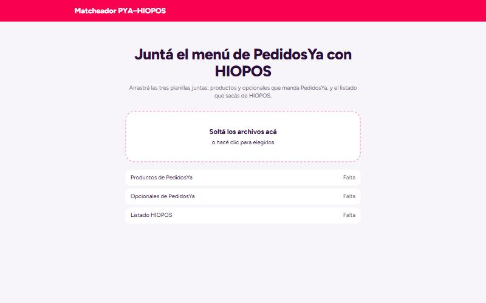
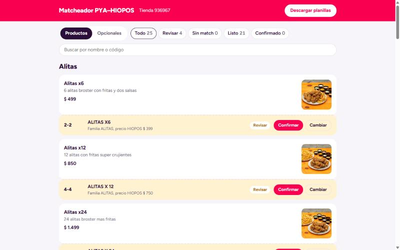
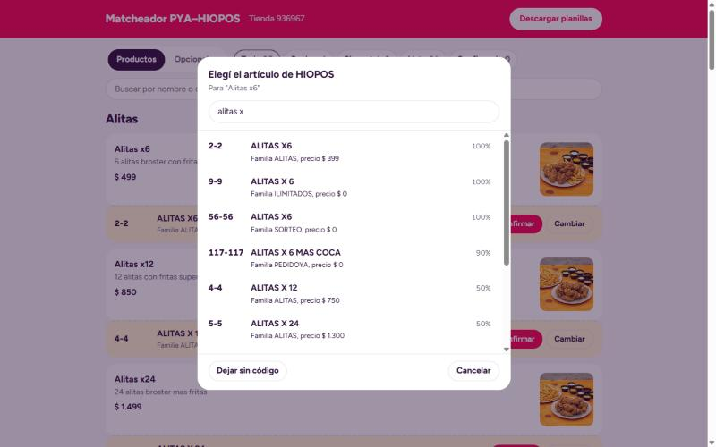
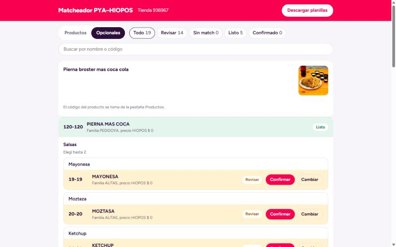

Pierna broster mas coca cola
Pierna broster más fritas más coca-cola de 600 ml
120-120
PIERNA MAS COCAFamilia PEDIDOYA
ListoCompleta los SKU de la integración en minutos, sin cruzar planillas a mano fila por fila.
Pierna broster más fritas más coca-cola de 600 ml
Para cada local cruzamos tres planillas a mano y escribimos el código HIOPOS de cada producto y de cada opcional.


Solo hay que detenerse en lo amarillo y lo rojo.
Match seguro. No hay que tocar nada.
Hay más de un candidato parecido. Mirar y confirmar.
No existe nada parecido en HIOPOS.
Lo elegiste o confirmaste vos.


Compara los nombres palabra por palabra, como lo haría una persona.
Tienda 936967, comparada con las planillas que se enviaron a mano.
Detectó un posible error del envío manual: "Alitas x6" se mandó con 9-9 (familia ILIMITADOS, $ 0). Sugiere 2-2, de la familia ALITAS, igual que x12, x24 y x48.
Un solo archivo. Se abre con doble clic en el navegador.